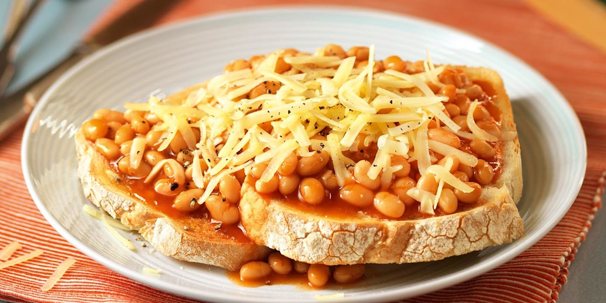

Home
Beans on Toast

Description
An all-time British classic made only from staples within the cupboard!
This simple and nutritious meal sustains all sorts across the nation!
Ingredients
- 1 can Baked Beans
- Butter
- Mature Cheddar cheese
- Ground black pepper
- Smoked paprika
Steps
- Add a bit of butter to a medium saucepan and melt
- Add can of beans to saucepan & bring to boil
- Reduce heat to a simmer & add some smoked paprika & a dash of pepper
- Cook the beans on a low heat with the lid on for 10 mins
- Toast 2 slices of bread
- Butter the toast and add the beans
- Grate some cheddar over the top and add a dash of pepper
- Bon Appetite!